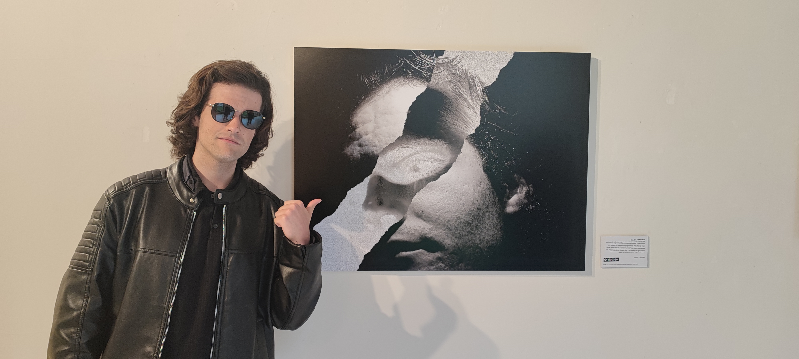
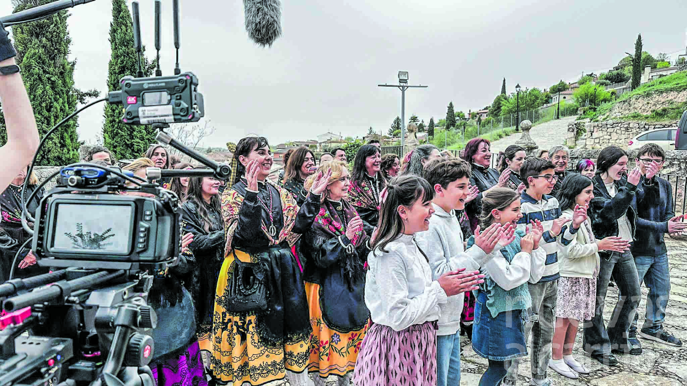
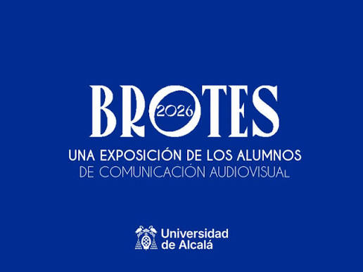

Grado en Comunicación Audiovisual
Universidad de Alcalá de Henares
2023 - 2027
Especializado en fotografía y montaje de contenidos audiovisuales.
Estudiante de Comunicación Audiovisual
El audiovisual es una manera de contar historias, y cada historia debe marcar la diferencia y hacernos mejores.
Ver mis proyectos
Desde siempre supe que quería dedicarme al mundo audiovisual de alguna manera. Me crié viendo muchas películas y jugando a bastantes videojuegos, y siempre me ha fascinado la manera en que un contenido audiovisual puede impactar tu vida e incluso ayudarte en tus peores. Eso es lo que me motiva a dedicarme a esto.
Soy una persona creativa y llena de ganas de contar historias que no se hayan contado antes.
Universidad de Alcalá de Henares
2023 - 2027
Especializado en fotografía y montaje de contenidos audiovisuales.
Curso de manejo de drones del grupo AESA Aerocámaras.
2024
El Corte Inglés
2026
Servicio de venta cara al público en los establecimientos de El Corte Inglés
Consulta algunos de los proyectos y experiencias desarrollados durante mi formación.
| Año | Proyecto | Rol | Herramientas |
|---|---|---|---|
| 2026 | Cortometraje universitario "Cine Alcarria / Santa Águeda" | Dirección de fotografía | Davinci Resolve / Cámara Blackmagic |
| 2026 | Exposición "BROTES" de Práctica y edición fotográficas | Fotografía y edición fotográfica | Photoshop |
| 2026 | Podcast narrativo de no ficción | Locutor | Audacity |

Santa Águeda
Año: 2026
Un cortometraje de comedia en el que la nueva alcaldesa de Cogolludo, Margarita, tendrá que afrontar las festividades que se acercan dándole un toque fresco y moderno, pero que mantenga el legado de las Águedas vivo.
Ver proyecto
BROTES
Año: 2026
En esta exposición que llevan a cabo los alumnos de fotografía de CAV en la UAH, junto al aula de fotografía, se ven reflejados tanto los sentimientos como las dotes fotográficas de estos alumnos.
Ver proyectoEmail: julian.gonzalezn@edu.uah.es
Instagram: @thejuls_005
LinkedIn: Julián González Naharro